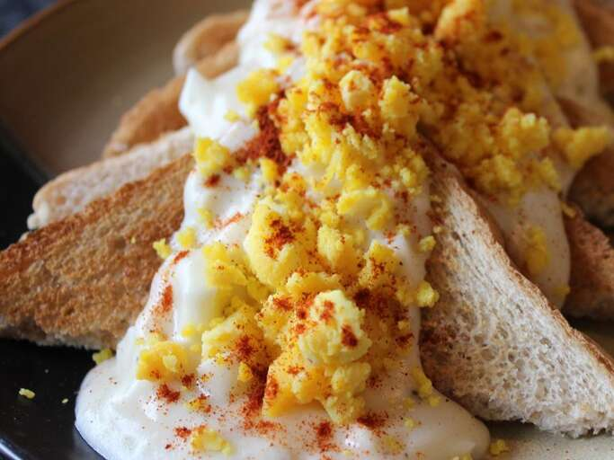

Goldenrod Egg

Description
A large meal made from toast with a white sauce and golden egg yolk chunks.
useful for cleaning up left over eggs from easter.
Ingredients
- 1/2 Cup Butter
- 1/2 Cup Flour
- Salt and Pepper (optional)
- 1 Quart Milk
- 8 Hard-Cooked Eggs
- 8 Slices White Bread, Toasted
- 1 Pinch Paprika
Steps
- Melt butter in a large saucepan over medium heat. Whisk in flour to make a roux, and cook, stirring constantly, for about 3 minutes. Whisk in the milk, and bring to a simmer, stirring constantly. Reduce heat to medium-low, and cook until thickened, 5 to 10 minutes more, stirring occasionally. Season to taste with salt and pepper.
- Separate the hard-cooked egg whites from the yolks. Roughly chop the whites and stir into the white sauce. Press the yolks through a mesh strainer and set aside.
- To serve, place a slice of toast on a plate, and ladle 1/2 cup of white sauce over top. Garnish with egg yolks and a sprinkle of paprika.